Start your repository
Step 1 :-
To add a new repository, We can see a " + " on the right top of the main window of GitHub. Click on that and then click on New repository

Step 2 :-
Add a unique name for our repository, then choose whether you want a private or public repository. Initialize this repository with a README and if you need an open-source license choose one.
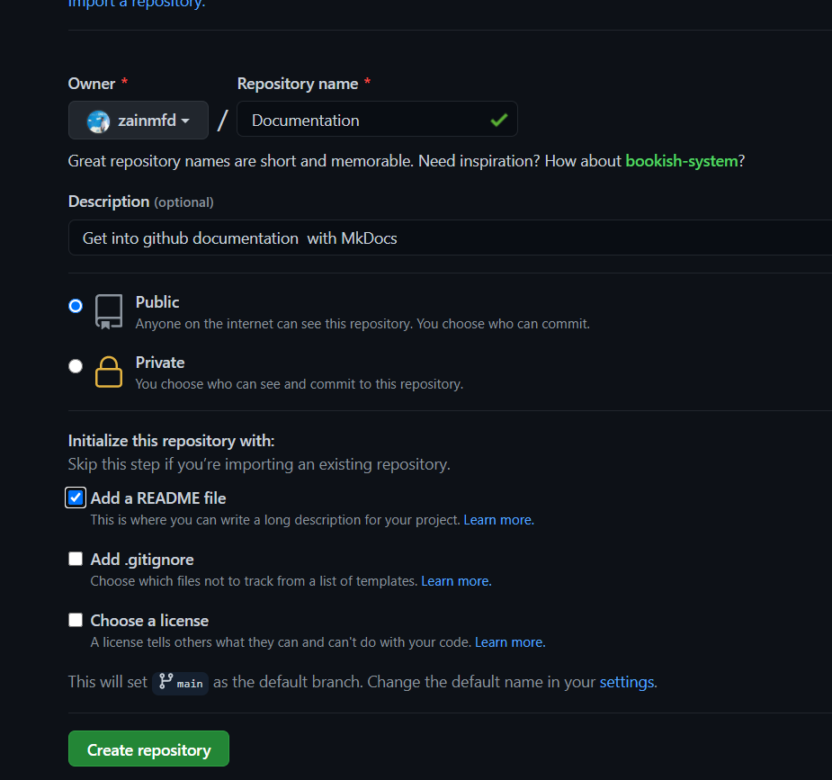
At last click on Create repository
Step 3 :-
Cloning a repository, When you create a repository on GitHub, it exists as a remote repository. You can clone your repository to create a local copy on your computer and sync between the two locations.
You can clone a repository from GitHub to your local computer to make it easier to fix merge conflicts, add or remove files, and push larger commits. When you clone a repository, you copy the repository from GitHub to your local machine.
Cloning a repository pulls down a full copy of all the repository data that GitHub has at that point in time, including all versions of every file and folder for the project. You can push your changes to the remote repository on GitHub, or pull other people's changes from GitHub.
For cloning right click on where ever you want to get your local copy into your PC and click on git bash.
then enter a comment like shown below.
$ git clone https://github.com/username/repository name
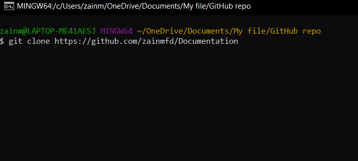
zainmfd is my user name and Documentation is repository name.
After cloning you can see this window like shown below

After this cloning is successfully done. Then you can see a new file(named as your repository name) in that folder.
Step 4:-
Open Visual Studio Code then
Then Install extention by clicking on
Extention (Ctrl+Shift+X)
Search Markdoen Preview Enhanced in Search Extension in Marketplace
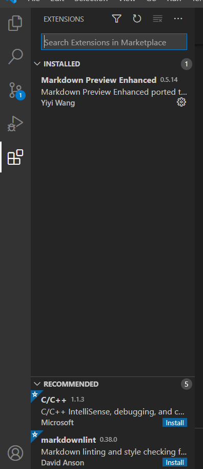
In my case, I already install Markdown, If you are not installed click on install.
Markdown is a lightweight and easy-to-use syntax for styling all forms of writing on the GitHub platform.
If you do not install python, install python. You can install python by clicking here.
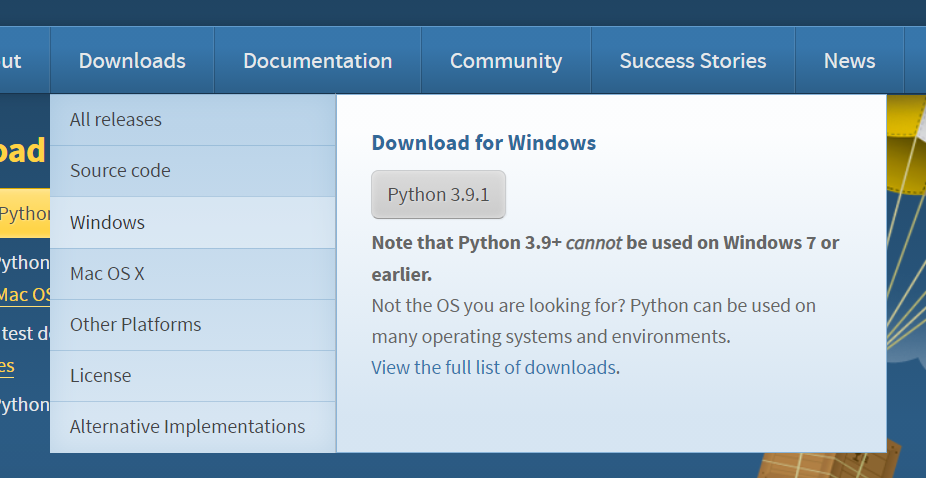
For more details of downloading click here
Then we want to install mkdocs.For that open Command prompt then type,
$ pip install mkdocs-material
After that, we want to open our folder to the Visual Studio Code
File => Open Folder (ctrl + k + o)
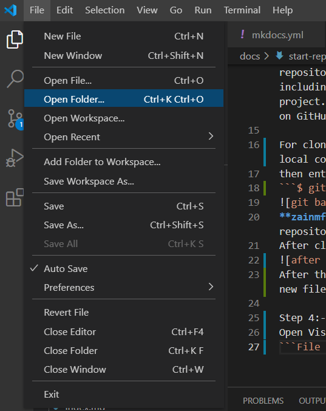
Select the folder that you want to open.
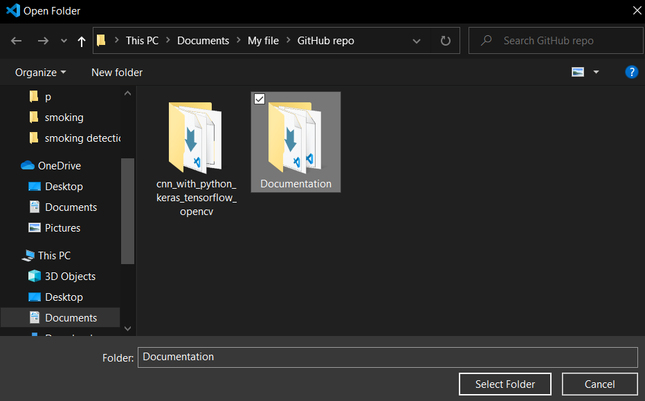
Select your cloned repository, In my case my repository name is Documentation and click on Select Folder.
Then open terminal and click on New Terminal in vs code.
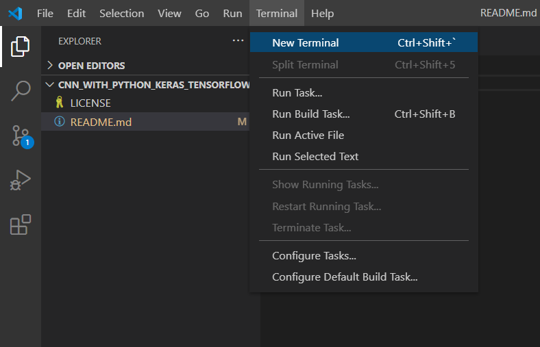
Now you can see a terminal at the bottam of screen. After this, you can bootstrap your project documentation using the mkdocs executable.
In that terminam type
mkdocs new .
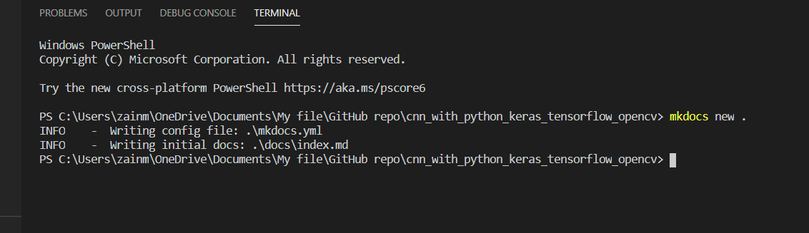
After this you can see two files called docs and mkdocs.yml on EXPLORER in left hand side.
You can preview your changes as you write your documentation. The server will automatically rebuild the site upon saving by typing.
mkdocs serve
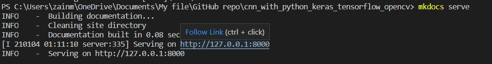
then click on that Follow Link, Now you will direct to the webpage.
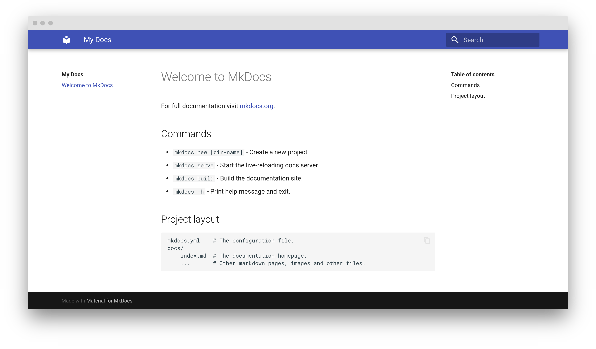
Then come back to vs code and start coding in your .md file and create what all file you need inside docs.In my case I create five files for this repository.
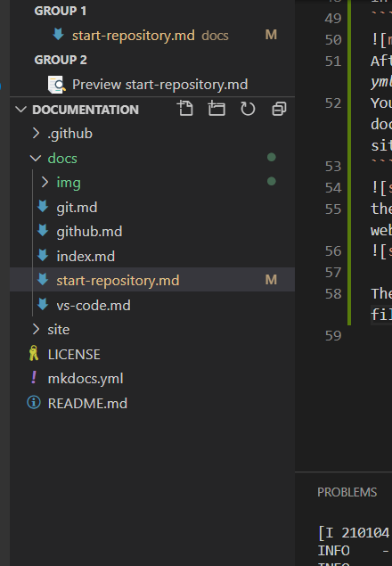
In my case I create a image (img) folder inside that docs, So it is easy to add an image by just typing

for example 
Step 5:-
You can refer all the syntax for programming by clicking here
Then you want to publish your site,for that you can refer thisclick here
Under with GitHub Actions there is a detailed explanation of setuping actions. For this repository I setup an action like below.
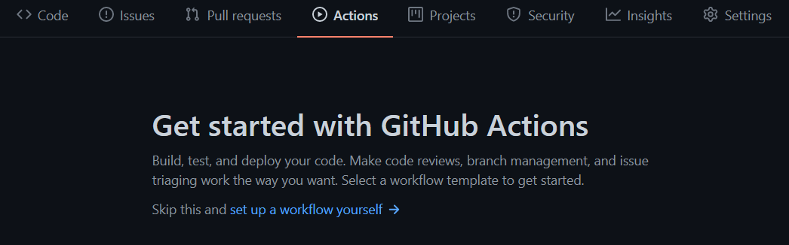
In this click on Skip this and set up a workflow yourself
name: ci
on:
push:
branches:
- master
- main
jobs:
deploy:
runs-on: ubuntu-latest
steps:
- uses: actions/checkout@v2
- uses: actions/setup-python@v2
with:
python-version: 3.x
- run: pip install mkdocs-material
- run: mkdocs gh-deploy --force
Then save I by naming ci.yml,now commit this by clicking on right side of the window.
Then go back to vscode and type git pull that will pull your changes that you make in github.
Now go to repository settings and change your github page like below and click save
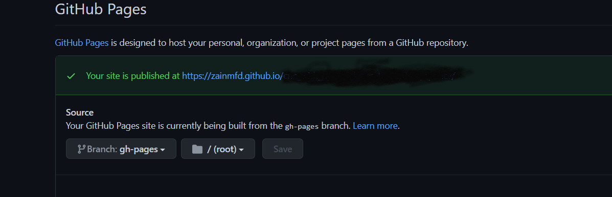
Wait for some time and then click on the above link.